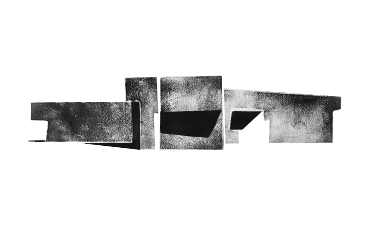
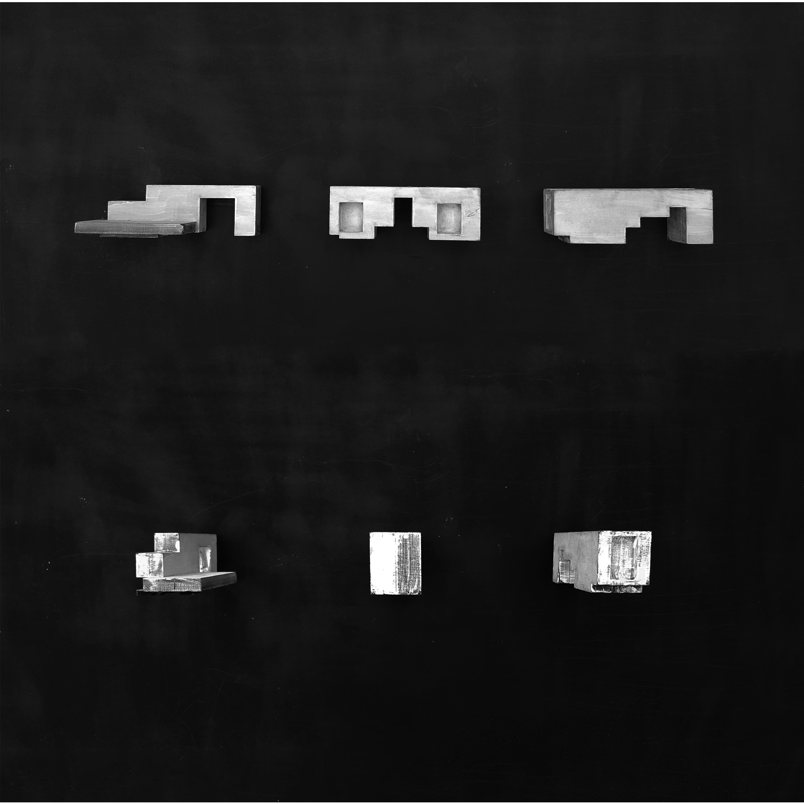
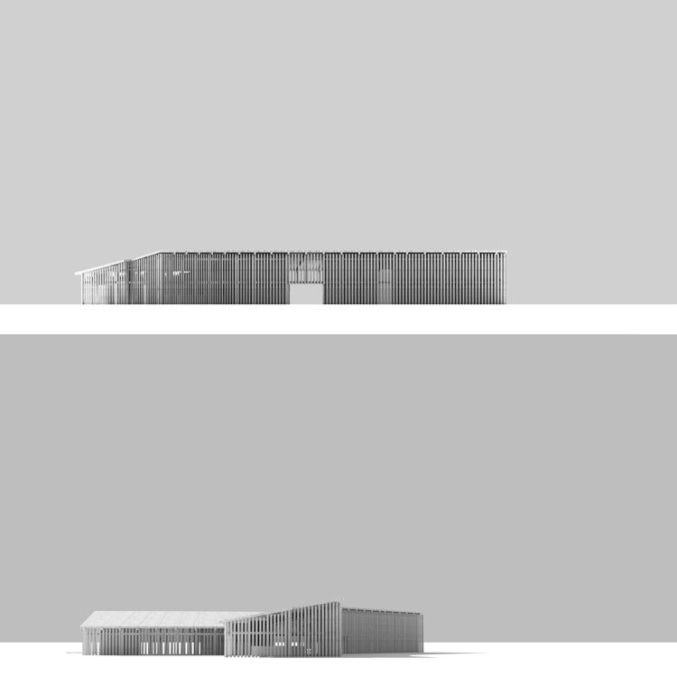
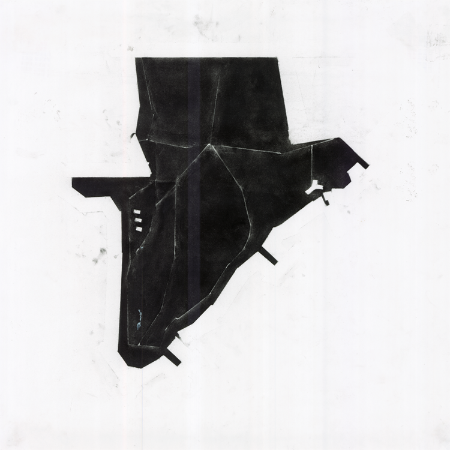
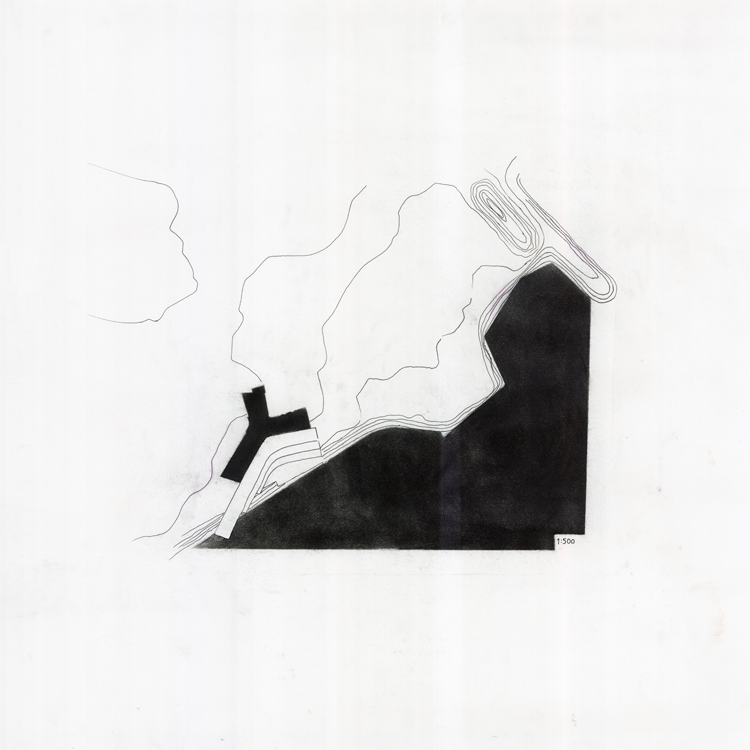

- EN TIL EN
-
NATURCENTER
The assignment was to make a cultural center at the overgrown wasteland of Sydhavnstippen.
The place have slowly transformed from a pile of concrete and building waste,
to a grass covered nature reserve where people come to get away from the city.
My approach to the site was to make a building that resembles something from the original place,
a solid block rather than a building, a wasteland sculpture. The idea was to eliminate the elements
that is characteristic for a building such as windows and doors to achieve this expression. This was to preserve the
feeling of unexplioted land as a contrast to the city through the sculptural approach.
alpha

alpha

alpha

alpha

alpha

alpha

alpha

alpha

alpha